Fun with Filters and Frequencies!
Part 1: Fun with Filters
In this part, we will build intuitions about 2D convolutions and filtering. We will begin by using the humble finite difference as our filter in the x and y directions.

Part 1.1: Convolutions from Scratch!
Question
First, let's recap what a convolution is. Implement it with four for loops, then two for loops. Implement padding, with zero fill values; convolution without padding will receive partial credit. Compare it with a built-in convolution function scipy.signal.convolve2d! Then, take a picture of yourself (and read it as grayscale), write out a 9x9 box filter, and convolve the picture with the box filter. Do it with the finite difference operators Dx and Dy as well. Include the code snippets in the website!
What can you use for this section? This section is meant to be done with numpy only, simple array operations.
Solution
Here is my implementation of 4-loop and 2-loop convolution functions:
def my_convove2d_4l(image, kernel):
in_h, in_w = image.shape
kh, kw = kernel.shape
f_kernel = np.flipud(np.fliplr(kernel))
pad_h, pad_w = kh - 1, kw - 1
padded_image = np.pad(
image, ((pad_h, pad_h), (pad_w, pad_w)), mode="constant", constant_values=0
)
out_h, out_w = in_h + kh - 1, in_w + kw - 1
output = np.zeros((out_h, out_w))
for j in range(out_h):
for i in range(out_w):
for v in range(kh):
for u in range(kw):
output[j, i] += padded_image[j + v, i + u] * f_kernel[v, u]
return outputdef my_convove2d_2l(image, kernel):
in_h, in_w = image.shape
kh, kw = kernel.shape
f_kernel = np.flipud(np.fliplr(kernel))
pad_h, pad_w = kh - 1, kw - 1
padded_image = np.pad(
image, ((pad_h, pad_h), (pad_w, pad_w)), mode="constant", constant_values=0
)
out_h, out_w = in_h + kh - 1, in_w + kw - 1
output = np.zeros((out_h, out_w))
for j in range(out_h):
for i in range(out_w):
output[j, i] = np.sum(padded_image[j : j + kh, i : i + kw] * f_kernel)
return outputMy implementation match the default scipy.signal.convolve2d function:
convolve2d(in1, in2, mode='full', boundary='fill', fillvalue=0)
That is, before I do the convolution, I pad in1 with zeros. Width is increased by 2 * (width of in2 - 1), half half each side. The height is increased similarly. The output size is (in1.shape[0] + in2.shape[0] - 1, in1.shape[1] + in2.shape[1] - 1). This increased size is due to the fact that the kernel is applied to pixels near the border of the image, where the kernel extends beyond the image boundary. The zero padding allows the kernel to be applied in these regions, resulting in a larger output size. To match the full mode, I don't need to crop the output.
To compare my functions with the scipy build-in function, I test on a 590x567 sample image with the Dx kernel, with run time shown:
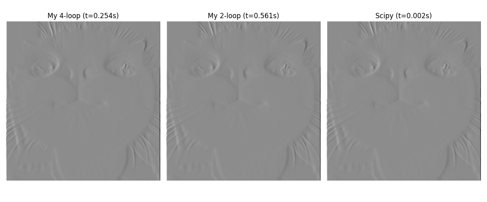The results are visually identical, and the maximum absolute pixel difference between my 2/4-loop implementation and the scipy implementation is lower than 1e-10.
Here are the results of convolving the same image with the box filter, Dx and Dy filters, using my 2-loop implementation:
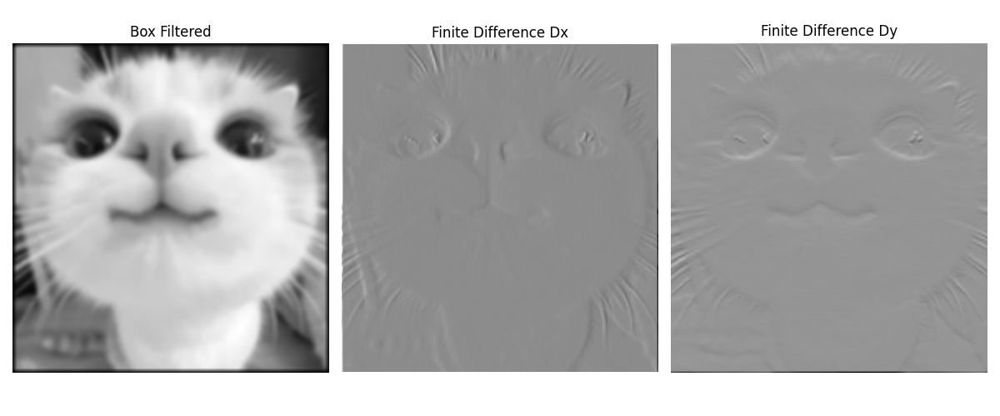Part 1.2: Finite Difference Operator
Question
First, show the partial derivative in x and y of the cameraman image by convolving the image with finite difference operators D_x and D_y . Now compute and show the gradient magnitude image. To turn this into an edge image, lets binarize the gradient magnitude image by picking the appropriate threshold (trying to suppress the noise while showing all the real edges; it will take you a few tries to find the right threshold; This threshold is meant to be assessed qualitatively). You can use scipy.signal.convolve2d.
Solution
The following are the results of convolving the cameraman image with the finite difference operators Dx and Dy, as well as the gradient magnitude image and the binarized edge image.
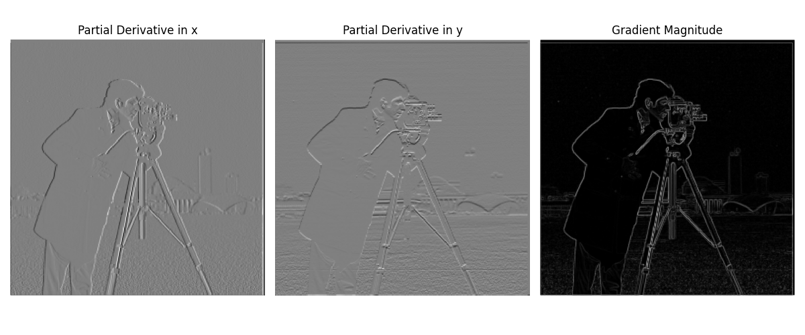 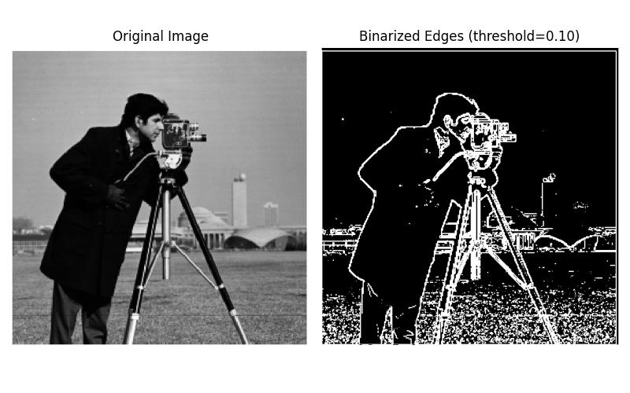I choose a threshold of 0.10 to binarize the gradient magnitude image. This threshold clears most of the noise from the sky, while still preserving most edges from the buildings and the cameraman. The edges of the buildings behind starts to disappear if I further increase the threshold, since they are white and very similar to the color of the sky in the grayscale picture. There are still some noisy edges on the grass, but that leaves space for improvement in the next part.
Part 1.3: Derivative of Gaussian (DoG) Filter
Question
We noted that the results with just the difference operator were rather noisy. Luckily, we have a smoothing operator handy: the Gaussian filter G. Create a blurred version of the original image by convolving with a gaussian and repeat the procedure in the previous part (one way to create a 2D gaussian filter is by using cv2.getGaussianKernel() to create a 1D gaussian and then taking an outer product with its transpose to get a 2D gaussian kernel).
What differences do you see?
Now we can do the same thing with a single convolution instead of two by creating a derivative of gaussian filters. Convolve the gaussian with D_x and D_y and display the resulting DoG filters as images.
Verify that you get the same result as before.
Solution
I use OpenCV's getGaussianKernel function to create a 1D Gaussian kernel, then take the outer product to get a 2D Gaussian kernel. I choose a kernel size of 9 and a standard deviation of 1.5.
Then I convolve the cameraman image with the Gaussian kernel to get a smoothed image. I repeat the gradient computation on the smoothed image, and the results are as follows:
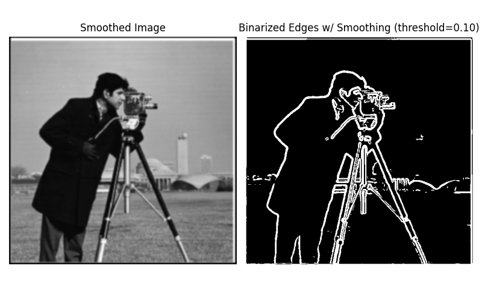The smoothed image has significantly reduced noise. The noise in the grass area is mostly gone, while the edges of the cameraman and most of the building edges are still well preserved.
Then I convolve the Gaussian kernel with the Dx and Dy kernels to get the DoG filters:
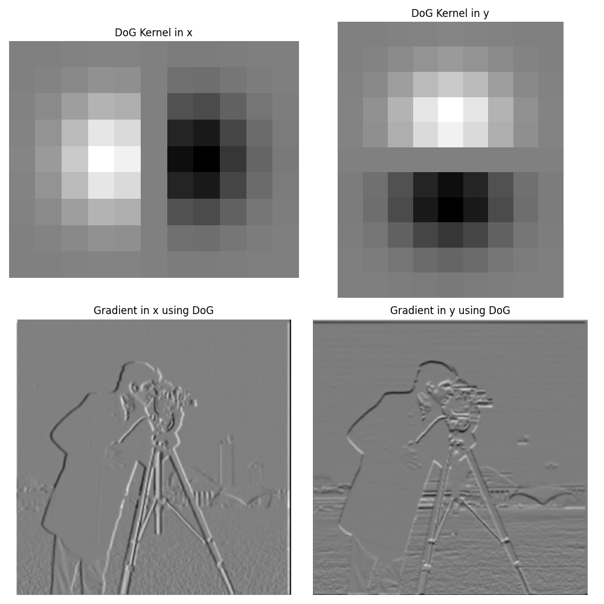Finally, I convolve the original image with the DoG filters to compute the gradient magnitude and binarized edge image:
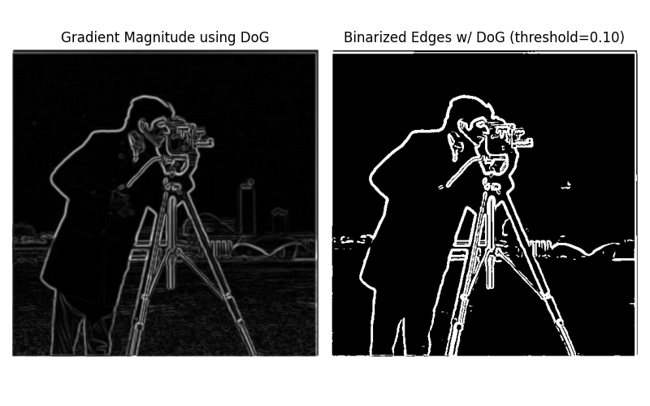I compare the gradient magnitude image obtained using the DoG filters with that obtained by first smoothing with the Gaussian and then applying the finite difference operators. The maximum absolute pixel difference between the two gradient magnitude images is lower than 1e-10, confirming that they are effectively identical.
Part 2: Fun with Frequencies!
Part 2.1: Image "Sharpening"
Question
Pick your favorite blurry image and get ready to "sharpen" it! We will derive the unsharp masking technique. Remember our favorite Gaussian filter from class. This is a low pass filter that retains only the low frequencies. We can subtract the blurred version from the original image to get the high frequencies of the image. An image often looks sharper if it has stronger high frequencies. So, lets add a little bit more high frequencies to the image! Combine this into a single convolution operation which is called the unsharp mask filter. Show your result on the following image (download here) plus other images of your choice --
Also for evaluation, pick a sharp image, blur it and then try to sharpen it again. Compare the original and the sharpened image and report your observations.
Solution
To build the unsharp mask filter, start with the original image and its blurred version obtained by convolving with a Gaussian filter. The high-frequency components are obtained by subtracting the blurred image from the original image. Then amplify these high frequencies by a factor α and add them back to the original image to get the sharpened image.
To handle 2d convolution with images with 3 color channels, I convolve each color channel with the kernel, and combine the channels again. I choose a Gaussian kernel size of 5 and sigma of 1, and α of 1.5. These are my results of applying the unsharp masking technique to the example taj image, and the image of Wukang Road in Shanghai:
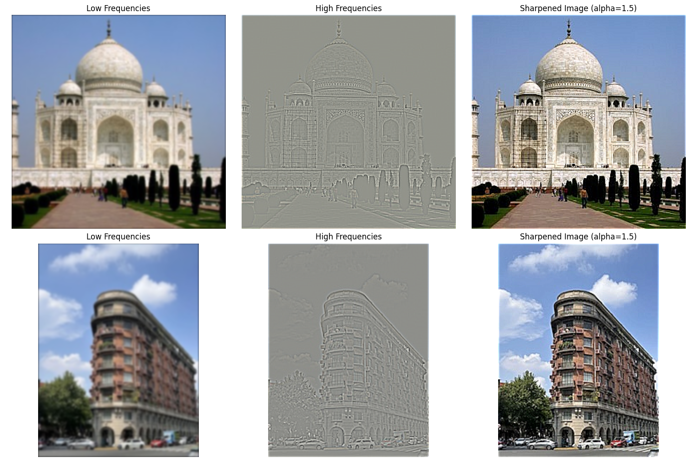To combine this into a single convolution, I start with a 2d Gaussian kernel by getting a 1d Gaussian kernel using OpenCV's getGaussianKernel function and taking the outer product. Then I multiply it with -α. This represents the subtraction of the blurred image scaled by α. Then I add (1 + α) to the center element of the kernel. The 1 in the center represents the original image, and the α represents the addition of the amplified original image, since the high frequencies is obtained by subtracting the blurred image from the original image.
To make sure the output image has the same effect as the original unsharp masking process, I choose a Gaussian kernel size of 5 and sigma of 1, and α of 1.5. The resulting unsharp mask kernel is:

The following are the results of applying the unsharp mask filter to the taj example image:
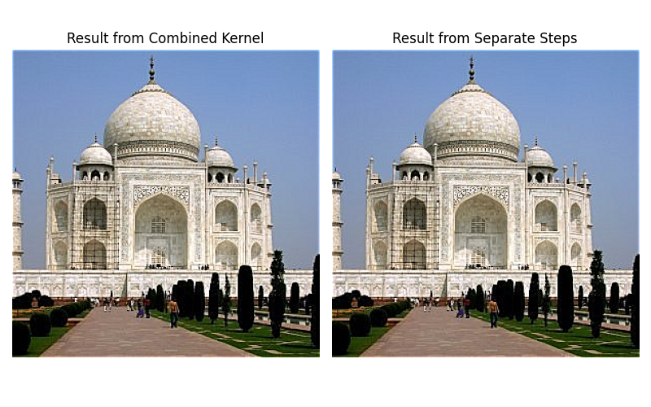The maximum absolute pixel difference between the image obtained using the combined kernel and that obtained by the separate steps is lower than 1e-7, confirming that they are effectively identical.
Then I test the unsharp masking technique on a sharp image that I blur using a Gaussian filter (size=15, sigma=3), and then try to sharpen it again:
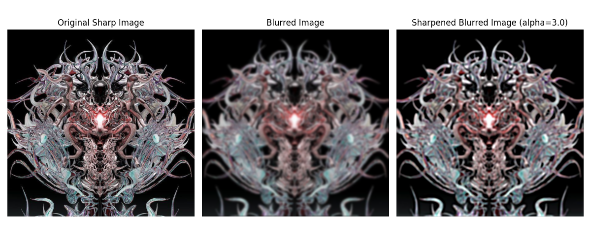The result shows that the unsharp masking technique can partially recover the sharpness of the original image, but fine detail is lost in the blurring process and cannot be fully recovered.
I also test with different values of α on the original sharp image to see its effect on the sharpening:
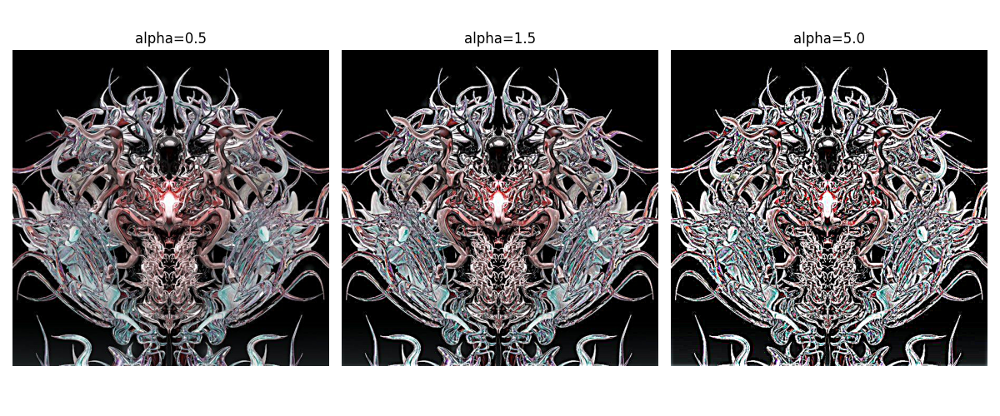It is observed that increasing α leads to stronger sharpening effects, but also introduces more artifacts such as edge ringing (halos around edges) and over-enhancement of some features. A very high α can make the image look unnatural and introduce artificial-looking sharpness. Therefore, a moderate value of α is preferred to balance sharpening and artifact introduction.
Part 2.2: Hybrid Images
Question
The goal of this part of the assignment is to create hybrid images using the approach described in the SIGGRAPH 2006 paper by Oliva, Torralba, and Schyns. Hybrid images are static images that change in interpretation as a function of the viewing distance. The basic idea is that high frequency tends to dominate perception when it is available, but, at a distance, only the low frequency (smooth) part of the signal can be seen. By blending the high frequency portion of one image with the low-frequency portion of another, you get a hybrid image that leads to different interpretations at different distances.
Here, we have included two sample images (of Derek and his former cat Nutmeg) and some starter code that can be used to load two images and align them. The alignment is important because it affects the perceptual grouping (read the paper for details).
- First, you'll need to get a few pairs of images that you want to make into hybrid images. You can use the sample images for debugging, but you should use your own images in your results. Then, you will need to write code to low-pass filter one image, high-pass filter the second image, and add (or average) the two images. For a low-pass filter, Oliva et al. suggest using a standard 2D Gaussian filter. For a high-pass filter, they suggest using the impulse filter minus the Gaussian filter (which can be computed by subtracting the Gaussian-filtered image from the original). The cutoff-frequency of each filter should be chosen with some experimentation.
- For your favorite result, you should also illustrate the process through frequency analysis. Show the log magnitude of the Fourier transform of the two input images, the filtered images, and the hybrid image. In Python, you can compute and display the 2D Fourier transform with:
plt.imshow(np.log(np.abs(np.fft.fftshift(np.fft.fft2(gray_image))))) - Try creating 2-3 hybrid images (change of expression, morph between different objects, change over time, etc.). Show the input image and hybrid result per example. (No need to show the intermediate results as in step 2.)
Solution
Following the instructions, I implement the hybrid image creation process. I first align the two images to make sure their eyes match. For the image that can be seen up close, I apply a low-pass Gaussian filter. For the image that is seen from afar, I compute the high-frequency components by subtracting its Gaussian-blurred version from the original image. Then I combine the two images by adding them together.
For the gaussian filter, I use OpenCV's getGaussianKernel function to create a 1D Gaussian kernel, then take the outer product to get a 2D Gaussian kernel. I choose the kernel size based on the sigma value. Specifically, I set the kernel size to be 2 * int(4 * sigma + 0.5) + 1, which ensures that the kernel captures most of the Gaussian's energy.
Here are my resulting hybrid images using the provided images of Derek and Nutmeg, my own images of Shaco and Lux from LOL, and two cute cat images I found online. The sigma values are shown in the titles, and the kernel sizes are determined accordingly.
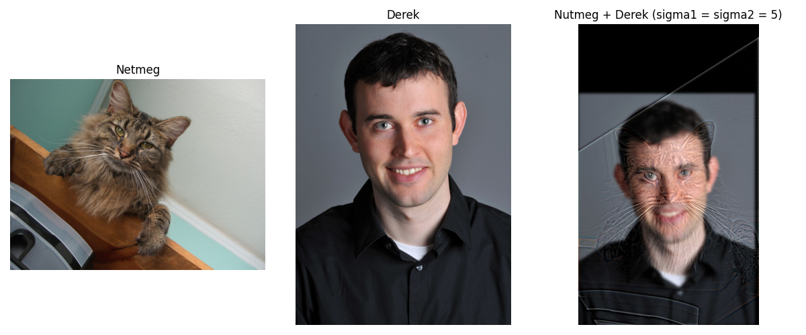 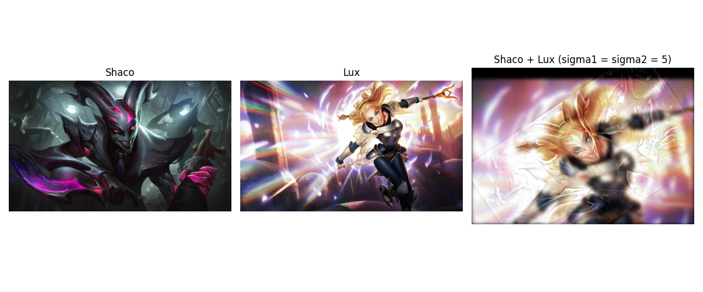 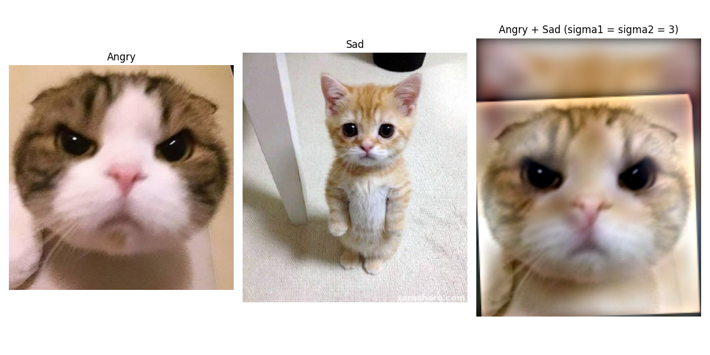Here is a detailed walkthrough of my implementation using my favourite one hybrid image, including the Fourier transforms of the greyscale image of each step:
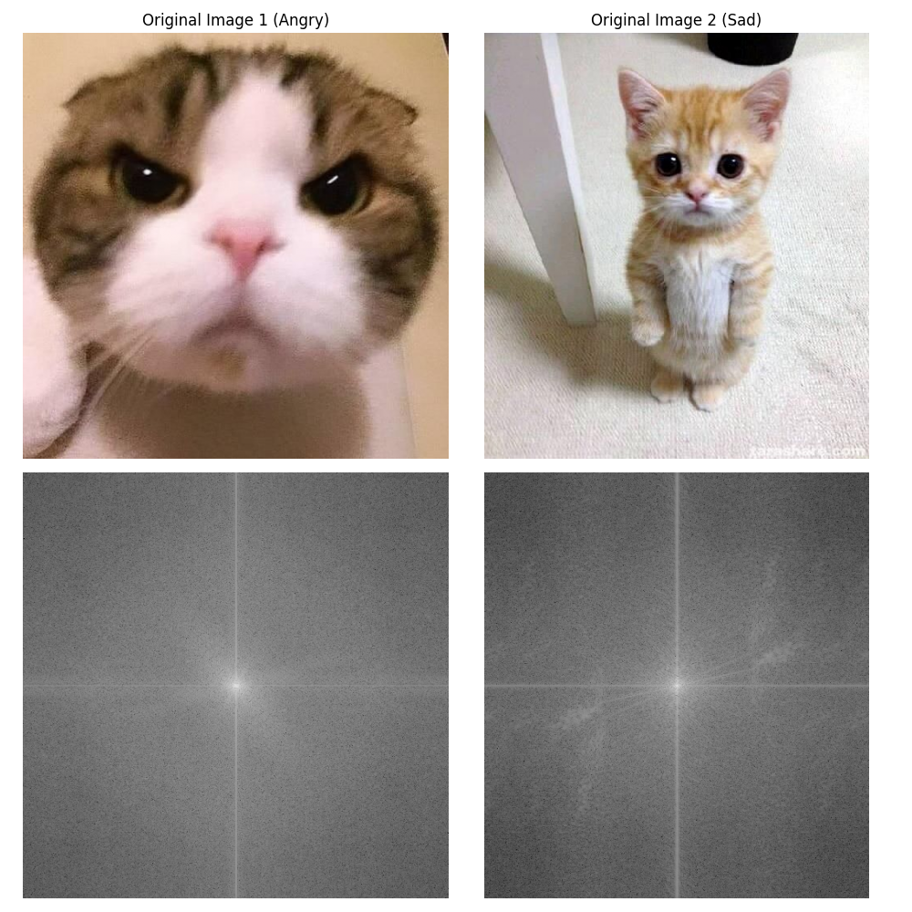I first align the two images.
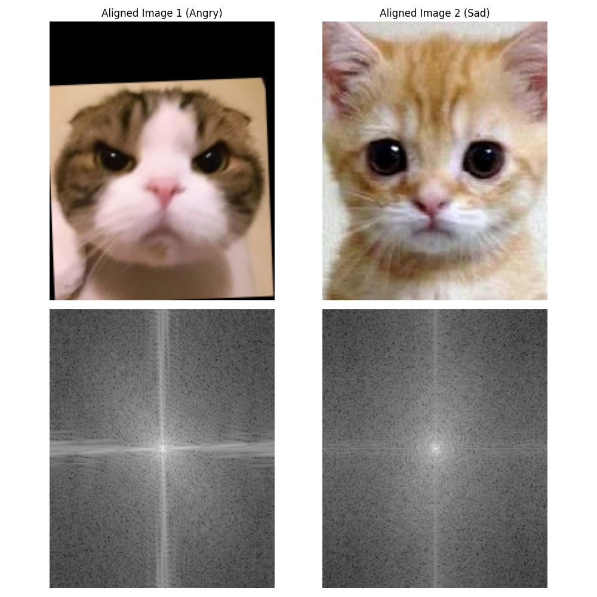Then I apply the Gaussian filter to get the low frequencies of the second image, and compute the high frequencies of the first image by subtracting its blurred version from the original image. The sigma value for both Gaussian filters is set to 3, and the kernel size is determined accordingly.

We can see that the low-pass filtered image mostly retains the low-frequency components, while the high-pass filtered image retains the high-frequency components.
Finally, I combine the two filtered images to get the hybrid image.
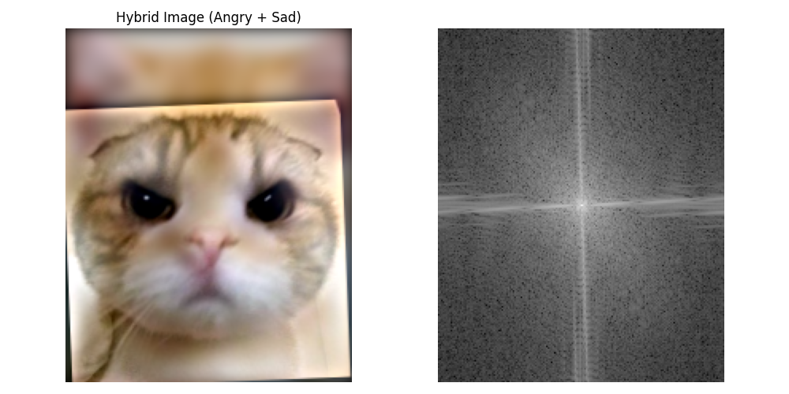The cat looks angry when viewed up close, but appears sad when viewed from afar.
Part 2.3: Gaussian and Laplacian Stacks
Question
In this part you will implement Gaussian and Laplacian stacks, which are kind of like pyramids but without the downsampling. This will prepare you for the next step for Multi-resolution blending.
- Implement a Gaussian and a Laplacian stack. The different between a stack and a pyramid is that in each level of the pyramid the image is downsampled, so that the result gets smaller and smaller. In a stack the images are never downsampled so the results are all the same dimension as the original image, and can all be saved in one 3D matrix (if the original image was a grayscale image). To create the successive levels of the Gaussian Stack, just apply the Gaussian filter at each level, but do not subsample. In this way we will get a stack that behaves similarly to a pyramid that was downsampled to half its size at each level. If you would rather work with pyramids, you may implement pyramids other than stacks. However, in any case, you are NOT allowed to use built-in pyramid functions like
cv2.pyrDown()orskimage.transform.pyramid_gaussian()in this project. You must implement your stacks from scratch! - Apply your Gaussian and Laplacian stacks to the Oraple and recreate the outcomes of Figure 3.42 in Szelski (Ed 2) page 167, as you can see in the image above. Review the 1983 paper for more information.
Solution
I implement the Gaussian stack by repeatedly convolving the image with a Gaussian filter, without downsampling. The Laplacian stack is computed by subtracting each level of the Gaussian stack from the previous level, except for the last level which is just the last level of the Gaussian stack.
The sigma value for the Gaussian filter is set to 1 for the first level, and is doubled for each subsequent level. The kernel size is determined based on the sigma value: kernel_size = 2 * int(4 * sigma + 0.5) + 1
The number of levels in the stack is set to 6.
The mask is simply a binary image that is white on the left half and black on the right half. I also Gaussian stack the mask to create a smooth transition between the two images.
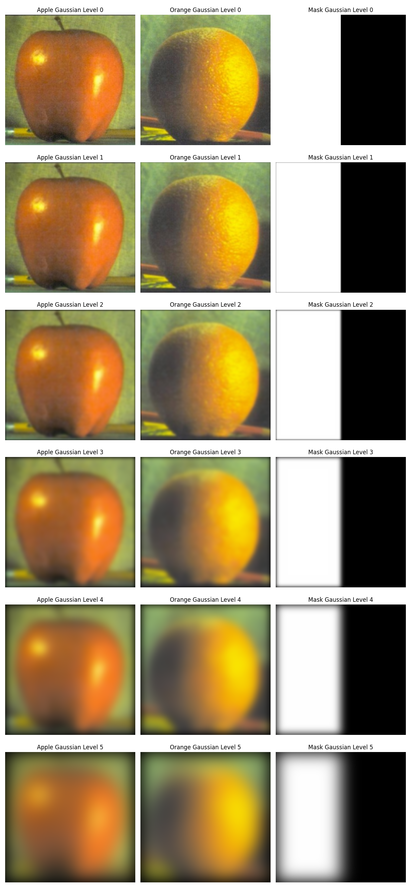 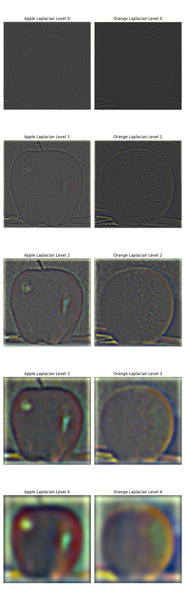Using this method, I recreate the outcomes of the figure 3.42 in Szelski's book:
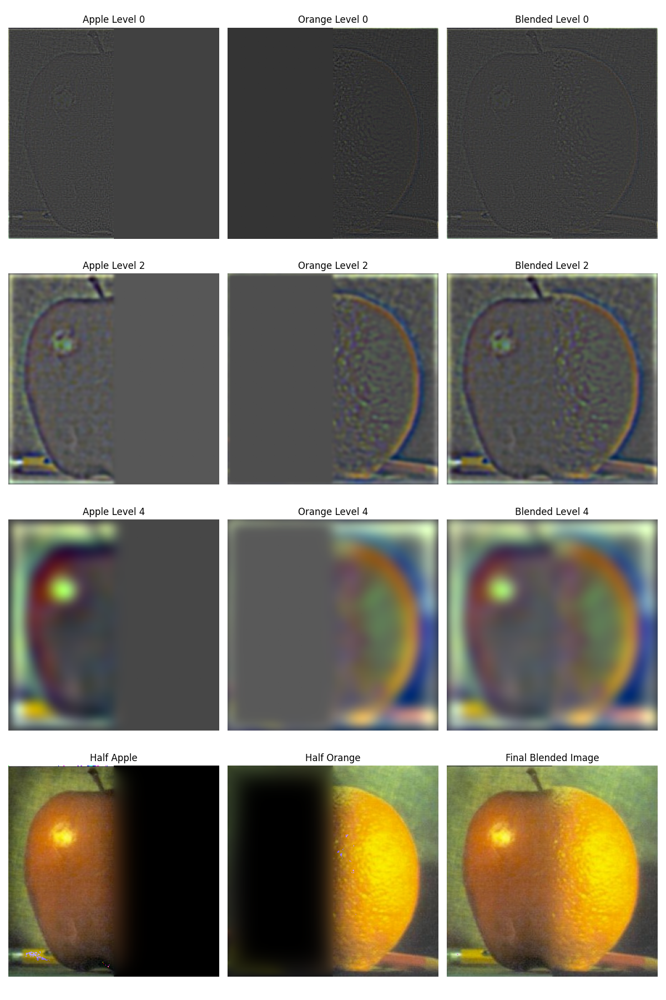Part 2.4: Multiresolution Blending (a.k.a. the oraple!)
Question
Review the 1983 paper by Burt and Adelson, if you haven't! This will provide you with the context to continue. In this part, we'll focus on actually blending two images together.
- First, you'll need to get a few pairs of images that you want blend together with a vertical or horizontal seam. You can use the sample images for debugging, but you should use your own images in your results. Then you will need to write some code in order to use your Gaussian and Laplacian stacks from part 2 in order to blend the images together. Since we are using stacks instead of pyramids like in the paper, the algorithm described on page 226 will not work as-is. If you try it out, you will find that you end up with a very clear seam between the apple and the orange since in the pyramid case the downsampling/blurring/upsampling hoopla ends up blurring the abrupt seam proposed in this algorithm. Instead, you should always use a mask as is proposed in the algorithm on page 230, and remember to create a Gaussian stack for your mask image as well as for the two input images. The Gaussian blurring of the mask in the pyramid will smooth out the transition between the two images. For the vertical or horizontal seam, your mask will simply be a step function of the same size as the original images.
- Now that you've made yourself an oraple (a.k.a your vertical or horizontal seam is nicely working), pick two pairs of images to blend together with an irregular mask, as is demonstrated in figure 8 in the paper.
- Blend together some crazy ideas of your own!
- Illustrate the process by applying your Laplacian stack and displaying it for your favorite result and the masked input images that created it. This should look similar to Figure 10 in the paper.
Solution
The Oraple one is done in the previous part. Here are some blending results of my own choosing, using irregular masks.
First, let's blend the Lux again with Shaco, but this time using an irregular mask that covers Lux's face:
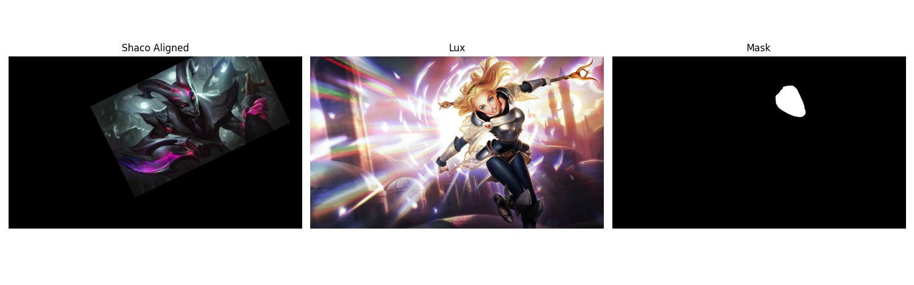Then I use the same method as in the previous part to blend the two images using the irregular mask, with levels set to 5:
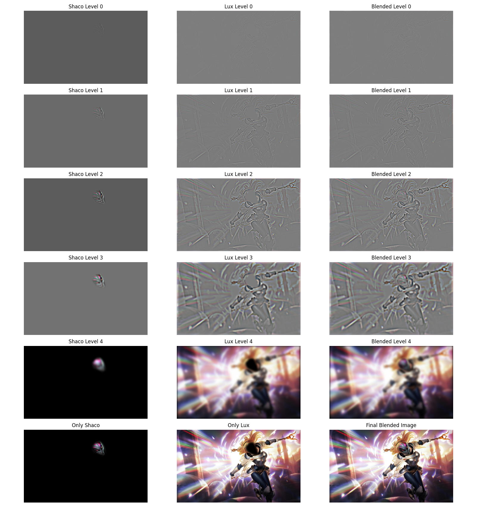The final blended image is as follows:
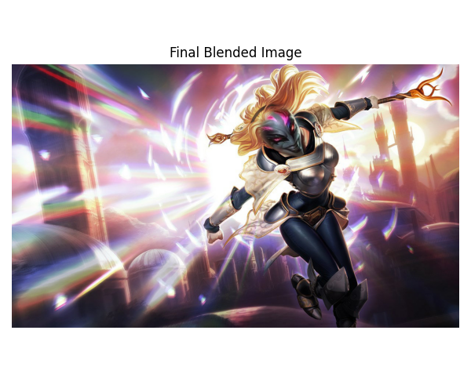There's another one, I turn myself into a pickle! (Hmm, so original...)
I first create an irregular mask that covers my face:
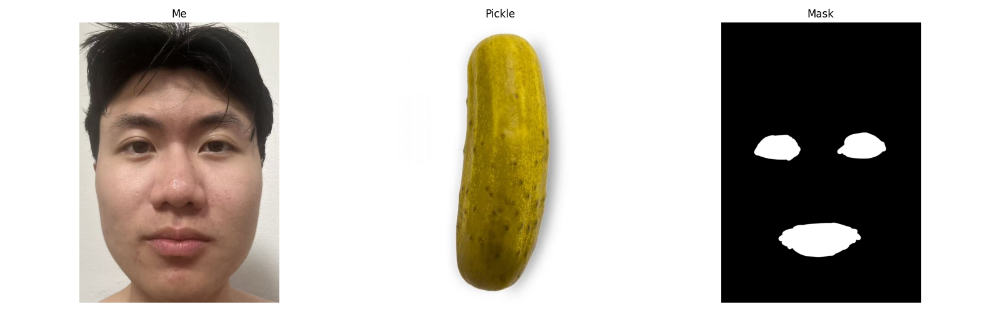Then I use the align code to align both the image of myself and the mask to the image of the pickle.
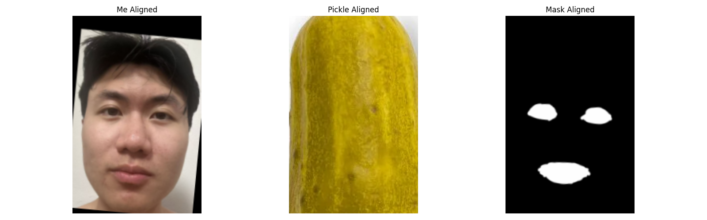Then I use the same method as in the previous part to blend the two images using the irregular mask, with levels set to 5:
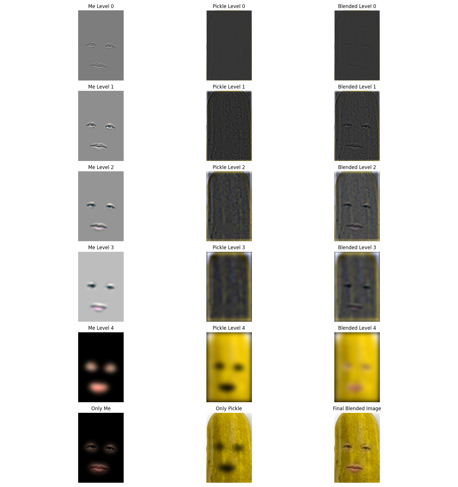The final blended image is as follows:
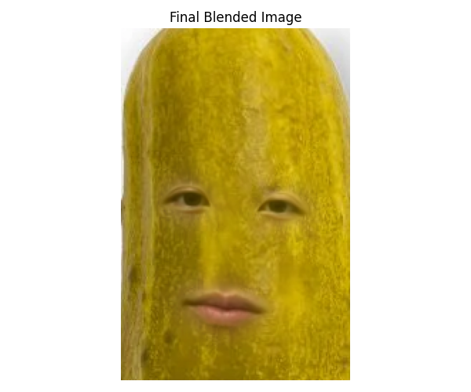